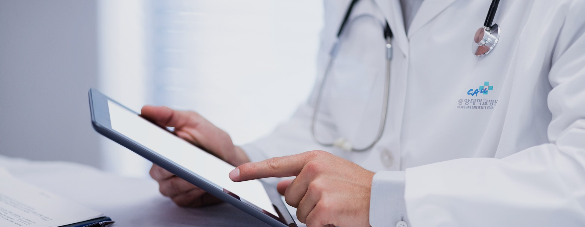
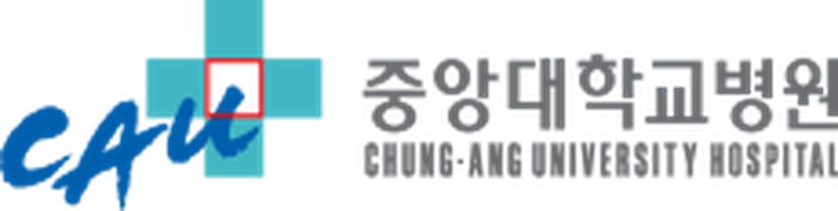
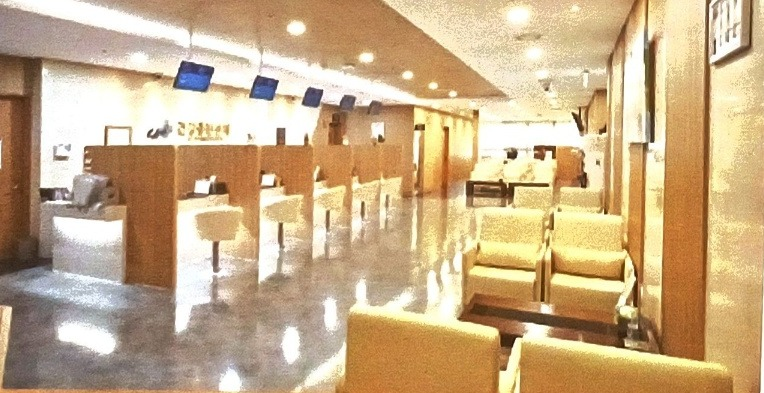
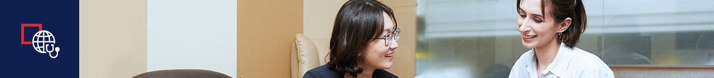
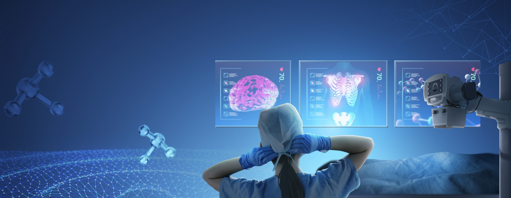
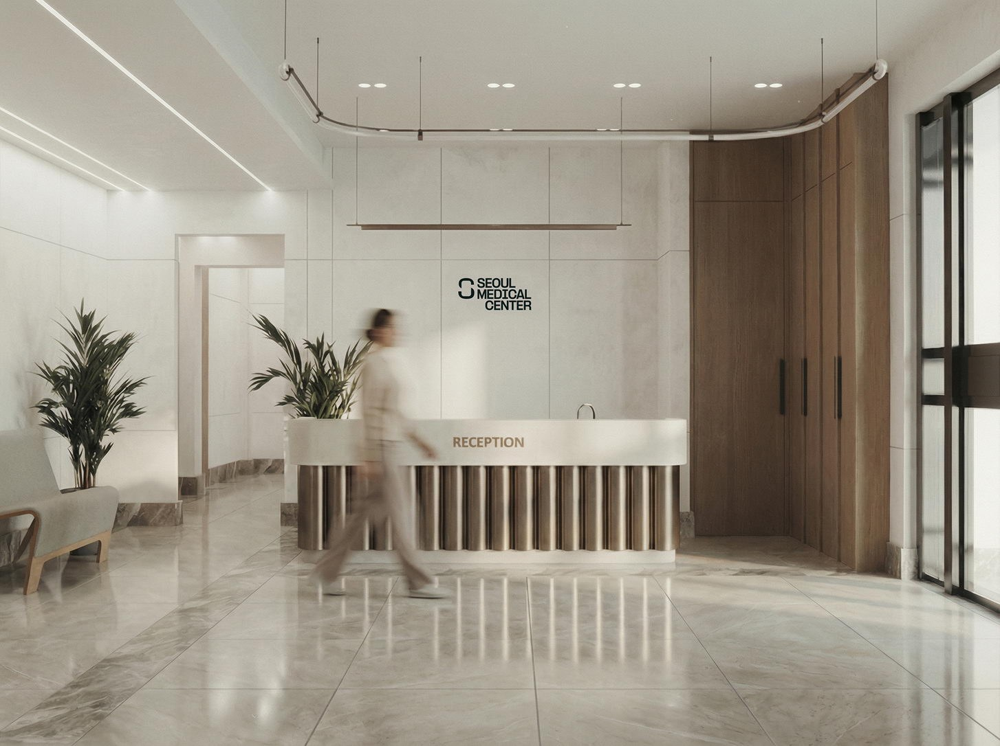

Chung-Ang University Hospital — многопрофильная университетская больница с 1968 года. Программы чекапа от базовой до двухдневной «Даймонд» с VVIP-палатой.

О клиникеУниверситетская больница Чунан (중앙대학교병원) открыта в 1968 году и входит в медицинский центр Университета Чунан в Сеуле. Это больница высшего уровня, которая специализируется на тяжёлых, неотложных и редких заболеваниях.
Миссия клиники — лучшая медицинская помощь, исследования и обучение ради здоровья и счастливой жизни людей. Клиника последовательно развивает инфраструктуру для лечения сложных и редких заболеваний.
По результатам оценки Министерства здравоохранения Кореи и HIRA: рак толстой кишки, желудка, молочной железы и лёгких.
Центр укрепления здоровья (Health Promotion Center) проводит обследования в одном месте: от лабораторных анализов до МРТ, КТ, ПЭТ-КТ и эндоскопии под седацией. Запись ведут медсёстры, специализирующиеся на чекапах.

Цены со скидкой 20%, в южнокорейских вонах (KRW). Полный состав программ — на следующих страницах.

В международном центре постоянно работают координаторы, говорящие по-английски и по-русски. Пациента сопровождают 1:1 на всех этапах: запись на приём и обследования, оплата, госпитализация и выписка, медицинские заключения и диски со снимками.
Ежегодный чекап для взрослых: оценка общего состояния, работы основных органов, ранние признаки диабета, болезней печени, почек и щитовидной железы, онкомаркеры.
Состав ниже + онкомаркеры: печень, кишечник, поджелудочная, предстательная железа
Состав ниже + онкомаркеры: печень, кишечник, поджелудочная железа
Базовая + маммография, анализ на рак шейки матки, женские гормоны, онкомаркеры яичников и молочной железы

Стандартная программа плюс углублённое обследование выбранной системы организма. Подходит, если есть жалобы, наследственная предрасположенность или факторы риска.
| Программа | Стандартная программа + | KRW |
|---|---|---|
| Детальное обследование для мужчин | + УЗИ предстательной железы, анализ крови на мужские гормоны | |
| Детальное обследование лёгких | + низкодозная КТ грудной клетки | |
| Детальное обследование ЖКТ | + колоноскопия (под седацией), КТ брюшной полости и таза | |
| Детальное обследование сердечно-сосудистой системы | + скрининговый анализ крови на заболевания сердца, тест на атеросклероз, эхокардиография, КТ коронарных артерий | |
| Детальное обследование головного мозга | + скрининговый анализ крови на заболевания мозга, тест на атеросклероз, МРТ и МРА головного мозга, УЗИ сонных артерий |
| Программа | Стандартная программа + | KRW |
|---|---|---|
| Детальное обследование для женщин | + трансвагинальное УЗИ, УЗИ молочных желёз, тест на ВПЧ, денситометрия | |
| Детальное обследование лёгких | + низкодозная КТ грудной клетки | |
| Детальное обследование ЖКТ | + колоноскопия (под седацией), КТ брюшной полости и таза | |
| Детальное обследование сердечно-сосудистой системы | + скрининговый анализ крови на заболевания сердца, тест на атеросклероз, эхокардиография, КТ коронарных артерий | |
| Детальное обследование головного мозга | + скрининговый анализ крови на заболевания мозга, тест на атеросклероз, МРТ и МРА головного мозга, УЗИ сонных артерий |
Рекомендации носят общий характер; программу подбирают с учётом возраста, жалоб и анамнеза.
Расширенный онкоскрининг: лёгкие, щитовидная железа, ЖКТ, органы малого таза и мужская или женская онкология. «Премиум» дополнительно включает МРТ головного мозга и КТ коронарных артерий.
Стандартная программа +
Всё из онкоскрининга +
Стандартная программа +
Всё из онкоскрининга +
Двухдневное обследование всех основных систем организма с размещением в VVIP-палате. Самая полная программа Центра укрепления здоровья.
| Базовая часть | Стандартная программа для мужчин / для женщин |
| Головной мозг | Скрининговый анализ крови на заболевания мозга, МРТ и МРА головного мозга + МРТ гиппокампа, УЗИ сонных артерий |
| Сердце и сосуды | Скрининговый анализ крови на заболевания сердца, тест на атеросклероз, эхокардиография, КТ коронарных артерий |
| Лёгкие | Низкодозная КТ грудной клетки |
| Пищеварительная система | Колоноскопия (под седацией), КТ брюшной полости и таза |
| Эндокринная система | КТ абдоминального ожирения, денситометрия, витамин D, УЗИ щитовидной железы |
| Позвоночник | На выбор: МРТ шейного отдела + рентген или МРТ поясничного отдела + рентген |
| Аллергия | Анализ крови на 105 аллергенов (MAST) |
| Для мужчин | Мужские гормоны, УЗИ предстательной железы |
| Для женщин | Тест ДНК ВПЧ, трансвагинальное УЗИ, УЗИ молочных желёз |
| Другое | Анализ крови на анемию, определение биологического возраста |
| Обследование | Что выявляет | KRW |
|---|---|---|
| Пищеварительная система | ||
| Колоноскопия | Воспаление, язвы, полипы, рак кишечника | |
| Седация | Гастро- или колоноскопия во сне | |
| КТ брюшной полости и таза | Болезни печени, гепатобилиарный рак, болезни почек, рак поджелудочной железы, мочевого пузыря, яичников | |
| Обмен веществ и сосуды | ||
| КТ абдоминального ожирения | Степень ожирения по объёму подкожного и висцерального жира | |
| Анализ жирных кислот | Состояние сосудов по уровню омега-3 и омега-6 в крови | |
| Тест на атеросклероз (ABI) | Степень атеросклероза периферических артерий | |
| ПЭТ-КТ | ||
| ПЭТ-КТ: головной мозг + туловище | Раннее выявление онкологии, определение стадии, поиск метастазов | 1 680 000 |
| ПЭТ-КТ: туловище | Раннее выявление онкологии, определение стадии, поиск метастазов | 1 330 000 |
| ПЭТ-КТ с допамином (FP-CIT) | Выявление болезни Паркинсона и других нарушений | 1 540 000 |
| ПЭТ-КТ с амилоидом | Выявление болезни Альцгеймера и других причин когнитивных нарушений | 1 120 000 |
| Антивозрастная медицина | ||
| Витамин D | Здоровье костей, хроническая усталость, метаболический синдром | |
| Биологический возраст | Общее состояние здоровья и скорость старения | |
| Теломеры | Оценка скорости старения на основе теломерной теории | |
| Активные формы кислорода и антиоксиданты | Оксидативный стресс и старение — данные для коррекции образа жизни | |
| Для женщин | ||
| Трансвагинальное УЗИ | Миомы, заболевания эндометрия, рак и кисты яичников | |
| Тест ДНК ВПЧ | Вирусы папилломы человека, вызывающие рак шейки матки | |
| УЗИ молочных желёз | Кисты, узловые образования, рак молочной железы | |
| УЗИ щитовидной железы | Кисты, тиреоидит, рак щитовидной железы | |
| Денситометрия | Диагностика остеопороза | |
| Обследование | Что выявляет | KRW |
|---|---|---|
| Для мужчин и лёгкие | ||
| УЗИ предстательной железы | Аденома и рак предстательной железы | |
| Низкодозная КТ грудной клетки | Бронхолёгочные заболевания, ранняя диагностика рака лёгких | |
| Сердце и сосуды | ||
| Эхокардиография | Сердечная недостаточность, болезни клапанов, врождённые пороки | |
| КТ: кальциноз коронарных артерий | Стенокардия, причины ишемической болезни, атеросклероз коронарных артерий | |
| КТ-коронарография | Окклюзия и стеноз коронарных артерий, инфаркт миокарда | |
| Головной мозг | ||
| МРТ + МРА головного мозга | Инсульт, кровоизлияние, опухоль, цереброваскулярные болезни, аневризма | |
| МРТ головного мозга | Ишемический инсульт, кровоизлияние, опухоль | |
| МРА головного мозга | Цереброваскулярные болезни, стеноз сосудов, аневризма | |
| КТ головного мозга | Инсульт, опухоль, аневризма, цереброваскулярные болезни | |
| УЗИ сонных артерий | Атеросклероз и сужение сонных артерий | |
| КТ сосудов головного мозга | Ишемический инсульт, кровоизлияние, опухоль | |
| МРТ + МРА + МРТ гиппокампа | Детальное обследование мозга, включая диагностику деменции | |
| Опорно-двигательный аппарат | ||
| МРТ + рентген шейного отдела | Позвонки и нервные корешки шейного отдела | |
| МРТ + рентген поясничного отдела | Позвонки и нервные корешки поясничного отдела | |
| МРТ + рентген плечевого сустава | Плечевой сустав | |
| МРТ + рентген локтевого сустава | Локтевой сустав | |
| МРТ + рентген коленного сустава | Коленный сустав | |
| Аллергия | ||
| Анализ на 105 аллергенов (MAST) | Респираторные и пищевые аллергены, домашняя пыль, клещи и др. | |
По вопросам программ обследования в Chung-Ang University Hospital обращайтесь в Seoul Medical Center в Алматы.


Сведения о клинике — по данным официального сайта Chung-Ang University Hospital; программы и цены — по прайс-листу Центра укрепления здоровья, со скидкой 20%, в южнокорейских вонах (KRW). Цены и состав программ могут меняться — уточняйте при записи. Контакты Seoul Medical Center — по данным seoulmed.kz (ноябрь 2026 г.).
Университетский уровень диагностики —
с заботой о каждом пациенте с 1968 года